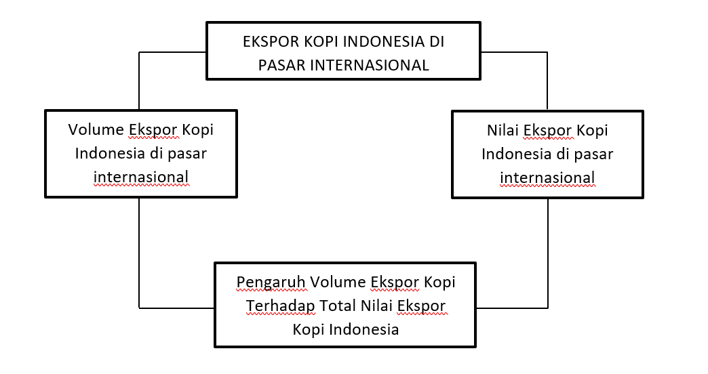
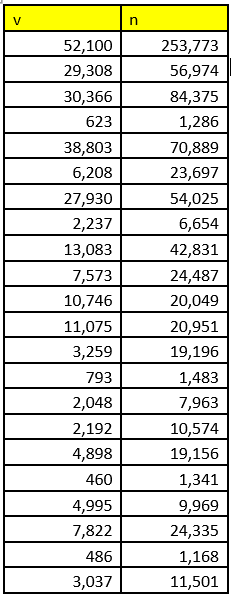
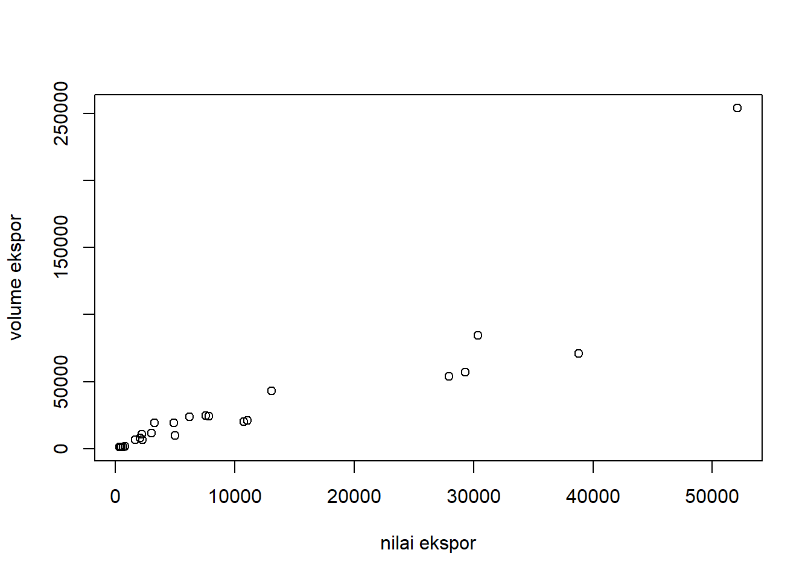
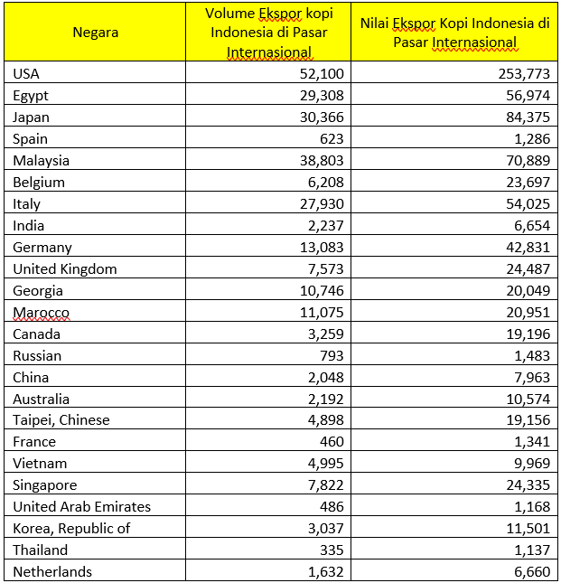

library(tidyverse)
library(readxl)ANALISIS PENGARUH VOLUME EKSPOR KOPI TERHADAP NILAI EKSPOR KOPI INDONESIA DI PASAR INTERNASIONAL PERIODE 2018
Metode Penelitian Politeknik APP Jakarta

1 Pendahuluan
1.1 Latar Belakang
Perdagangan internasional merupakan aktivitas jual beli barang atau jasa yang melibatkan dua atau lebih negara yang meliputi kegiatan ekspor maupun impor. Di era globalisasi saat ini, banyak negara yang melakukan persaingan dalam melakukan kegiatan ekspor maupun impor. Mereka bersaing untuk memperebutkan pangsa pasar dunia dalam berbagai komoditas unggulannya. Dengan meningkatnya persaingan di pasar internasional, suatu negara harus memiliki komoditas yang berkualitas dan lebih unggul dari negara lain.
Salah satu sector unggulan dalam kegiatan ekspor impor Indonesia adalah sector perkebunan, dimana sector perkebunan Indonesia menyumbang nilai yang cukup besar, yaitu sebanyak 50% yang berasal dari komoditi teh, kopi, karet, kakao, dan kelapa sawit. Indonesia merupakan negara penghasil kopi terbesar keempat di dunia setelah Brazil, Vietnam dan Kamboja. Berdasarkan data dari Kementrian Perindustrian Republik Indonesia, komoditi kopi merupakan salah satu penyumbang devisa yang besar bagi perekonomian Indonesia. Sekitar 67% kopi asli Indonesia telah diekspor ke pasar internasional. Kopi nusantara sangat digandrumi oleh masyarakat Eropa dan Asia Timur karena selain memiliki cita rasa yang khas, kopi nusantara sudah memiliki sertifikat International Coffee Organization (ICO) sehingga kopi yang di ekspor sudah terjamin standar kualitasnya (Haryadi dan Nopriyandi, 2017).
Berdasarkan data yang berasal dari Direktorat Jenderal Perkebunan 2018, komoditas kopi merupakan komoditas perkebunan dengan jumlah volume ekspor tertinggi kedua diantara komoditas perkebunan Indonesia yang lain, dengan jumlah volume ekspor tertinggi kedua dibandingkan komoditas lainnya. Komoditas kopi adalah komoditas ekspor yang sangat potensial terbesar ketiga setelah sektor minyak bumi dan gas alam.
Indonesia memiliki luas perkebunan kopi yang sangat luas. Luas perkebunan kopi Indonesia mencapai 24.487,19 ha pada tahun 2020 (menurut Status pengusahaan (000 Ha). Hal tersebut tentunya mempengaruhi volume produksi kopi yang di hasilkan Indonesia. Daerah penghasil produksi kopi terbesar di Indonesia diantaranya: Sumatera Selatan sebesar 201,40 ribu ton, Lampung sebesar 118,00 ribu ton, Sumatera Utara sebesar 74,20 ribu ton, Aceh sebesar 74,20 ribu ton, dan Bengkulu sebesar 62,40 ribu ton. Sedangkan untuk daerah yang menghasilkan nilai ekspor terbesar di Indonesia pada tahun 2021 berasal dari Lampung sebesar US$400,6 juta dan disusul oleh Sumatera Utara sebesar US$204,1 juta.
Dalam perdagangan internasional, Indonesia menjadi salah satu negara penghasil dan pengekspor kopi terbesar didunia. Keberadaan Indonesia sebagai penghasil kopi terbesar di dunia membuktikan bahwa kopi Indonesia diperhitungkan dan cukup berpeluang untuk dapat masuk dan bersaing di pasar global. Negara tujuan ekspor kopi Indonesia diantaranya: Amerika Serikat 194,706, Mesir 194,851, Jepang 89,083, Spanyol 61,970, dan Malaysia 57,536.
Dari penjelasan diatas, volume ekspor kopi Indonesia di pasar Internasional dapat berpengaruh pada nilai ekspor kopi Indonesia yang dihasilkan dalam periode tertentu. Semakin besar volume produksi kopi yang di ekspor ke pasar Internasional, semakin besar kemungkinan nilai ekspor kopi Indonesia yang didapat. Dengan tingginya nilai ekspor kopi Indonesia, hal tersebut dapat meningkatkan devisa negara dan membantu peningkatan perekonomian Indonesia. Penelitian ini dimaksudkan untuk mengetahui apakah volume ekspor kopi Indonesia di pasar internasional dapat memberikan pengaruh terhadap nilai ekspor kopi Indonesia.
1.2 Ruang lingkup
Penelitian ini dibatasi hanya dengan menghubungkan volume ekspor kopi Indonesia dengan total nilai ekspor kopi Indonesia periode 2018 di pasar internasional. Data tersebut dihubungkan untuk selanjutnya dilakukan regresi.
1.3 Rumusan Masalah
Apakah volume ekspor kopi Indonesia dapat berpengaruh terhadap total nilai ekspor kopi Indonesia di pasar internasional?
Bagaimana pengaruhnya?
Bagaimana keadaan volume ekspor kopi dan nilai ekspor kopi Indonesia di pasar internasional?
1.4 Tujuan dan Manfaat Penelitian
Tujuan dari penelitian ini adalah untuk melihat apakah volume ekspor suatu komoditas memiliki pengaruh terhadap total nilai ekspor komoditas tersebut yang dihasilkan di pasar internasional.
Sedangkan manfaat dari penelitian ini adalah untuk mengetahui seberapa penting volume ekspor dapat mempengaruhi nilai ekspor komoditas suatu negara. Jika penting apa saja yang harus dilakukan untuk meningkatkan volume ekspor tersebut agar dapat mempengaruhi peningkatan nilai ekspor komoditas tersebut.
1.5 Package
Ini tidak wajib ada di packages yang digunakan antara lain sebagai berikut:
2 Studi Pustaka
2.1 Teori
Perdagangan Internasional
Menurut (Setiawan; Lestari, 2011), perdagangan internasional adalah perdagangan yang dilakukan oleh penduduk suatu negara dengan penduduk negara lain atas dasar kesepakatan bersama. Perdagangan internasional meliputi kegiatan ekspor dan impor. Tujuan utama dari melakukan perdagangan internasional adalah untuk memperoleh keuntungan. Dengan perdagangan internasional akan memudahkan suatu masyarakat atau negara dalam memenuhi kebutuhannya.
Ekspor
Menurut (Amir, 2004), ekspor adalah upaya melakukan penjualan komoditas yang kita miliki kepada bangsa lain atau negara asing, dengan mengharapkan pembayaran dalam valuta asing, serta melakukan komoditi dengan memakai bahasa asing.
Volume dan Nilai ekspor
Volume ekspor merupakan jumlah atau kuantitas suatu komoditas yang dihasilkan oleh suatu negara atau perusahaan untuk kemudian di ekspor. Volume ekspor dipengaruhi oleh beberapa faktor, diantaranya luas lahan, total produksi, harga ekspor, dan nilai tukar. Nilai ekspor merupakan nilai atau value yang dihasilkan dari ekspor suatu komoditas ke pasar internasional pada suatu periode tertentu.
2.2 Kerangka Penelitian

3 Metode Penelitian
3.1 Data
Objek penelitian yang digunakan adalah volume ekspor kopi Indonesia dan nilai ekspor kopi Indonesia di pasar internasional. Penelitian dilakukan terhitung mulai tanggal 16 Januari 2023. Data yang digunakan adalah data sekunder volume dan nilai ekspor kopi Indonesia di pasar internasional periode 2018. Data tersebut bersumber dari website resmi International Trade Map, jurnal referensi, dan artikel ilmiah. Berikut data yang bersumber dari International Trade Map:

Dari data diatas, menghasilkan plot seperti dibawah ini:
setwd('D:/Kuliah Semester III/Metodologi Penelitian/Tugas UAS') # AWAS SETWD-NYA PERBAIKI DULU
library('readxl')
library('tidyverse')
dat<-read_excel('regresifix.xlsx')
reg1<-lm(v~n,data=dat)
summary(reg1)
Call:
lm(formula = v ~ n, data = dat)
Residuals:
Min 1Q Median 3Q Max
-11580.1 -3081.7 -2728.7 422.7 18686.7
Coefficients:
Estimate Std. Error t value Pr(>|t|)
(Intercept) 3.230e+03 1.607e+03 2.010 0.0568 .
n 2.382e-01 2.648e-02 8.996 7.98e-09 ***
---
Signif. codes: 0 '***' 0.001 '**' 0.01 '*' 0.05 '.' 0.1 ' ' 1
Residual standard error: 6666 on 22 degrees of freedom
Multiple R-squared: 0.7863, Adjusted R-squared: 0.7766
F-statistic: 80.93 on 1 and 22 DF, p-value: 7.975e-09plot(dat$v,dat$n,xlab="nilai ekspor",ylab="volume ekspor")
Keterangan
V: Volume Ekspor Kopi Indonesia 2018
N: Nilai Ekspor Kopi Indonesia 2018
3.2 Metode Analisis
Dalam penelitian ini, metode yang digunakan adalah Ordinary Least Square (OLS) atau regresi univariat dengan satu variable independent. Penelitian ini dimaksudkan untuk mencari keterkaitan antara volume ekspor kopi dengan nilai ekspor kopi.
Spesifikasi:
\[ y_{t}=\beta_0 + \beta_1 x_t+\mu_t \]
di mana \(y_t\) adalah volume dan \(x_t\) adalah nilai.
4 Pembahasan
4.1 Pembahasan masalah
Nilai ekspor merupakan salah satu faktor yang berpengaruh terhadap pendapatan suatu negara. Nilai ekspor yang besar dapat dipengaruhi oleh jumlah volume ekspor yang dihasilkan. Apabila suatu negara memiliki volume ekspor yang besar, maka nilai ekspor yang dihasilkan akan ikut meningkat. Semakin besar volume ekspor suatu negara, semakin besar nilai ekspor yang dihasilkan.
Oleh karena itu, penelitian ini dilakukan untuk menghubungkan pengaruh volume ekspor terhadap nilai ekspor negara Indonesia periode 2018, yang mana komoditas yang menjadi subjek adalah kopi.
Berikut data yang digunakan untuk mengukur pengaruh volume ekspor kopi terhadap nilai ekspor kopi Indonesia.

Data diatas digunakan untuk melakukan regresi.
4.2 Analisis masalah
Hasil regresinya adalah
reg1<-lm(v~n,data=dat)
summary(reg1)
Call:
lm(formula = v ~ n, data = dat)
Residuals:
Min 1Q Median 3Q Max
-11580.1 -3081.7 -2728.7 422.7 18686.7
Coefficients:
Estimate Std. Error t value Pr(>|t|)
(Intercept) 3.230e+03 1.607e+03 2.010 0.0568 .
n 2.382e-01 2.648e-02 8.996 7.98e-09 ***
---
Signif. codes: 0 '***' 0.001 '**' 0.01 '*' 0.05 '.' 0.1 ' ' 1
Residual standard error: 6666 on 22 degrees of freedom
Multiple R-squared: 0.7863, Adjusted R-squared: 0.7766
F-statistic: 80.93 on 1 and 22 DF, p-value: 7.975e-095 Kesimpulan dan Saran
5.1 Kesimpulan
Dari hasil regresi diatas, dapat disimpulkan bahwa setiap 1% volume ekspor kopi Indonesia mempengaruhi 2,38% nilai ekspor kopi Indonesia. Dengan begitu, dapat disimpulkan bahwa volume ekspor kopi berpengaruh terhadap nilai ekspor kopi yang dihasilkan negara Indonesia. Volume ekspor kopi Indonesia ke setiap negara di pasar dunia memiliki angka yang berbeda-beda. Negara yang memiliki volume ekspor terbesar berada pada negara USA dengan volume ekspor kopi sebesar 52,100 yang kemudian menghasilkan nilai ekspor tertinggi sebesar 253,773.
5.2 Saran
Dengan pembuktian bahwa volume ekspor kopi Indonesia berpengaruh terhadap nilai ekspor kopi Indonesia, pemerintah dapat melakukan upaya peningkatan jumlah produksi kopi yang dapat dihasilkan Indonesia. Beberapa cara yang dapat dilakukan diantaranya mengadakan program gerakan tanam kopi, pelatihan teknis budidaya kopi yang baik dan benar kepada para petani kopi, meningkatkan fasilitas yang digunakan untuk melakukan penanaman kopi maupun proses produksi kopi, serta pemilihan bibit unggul tanaman kopi. Dengan upaya tersebut diharapkan volume produksi ekspor kopi Indonesia menjadi meningkat dan dapat mempengaruhi peningkatan nilai ekspor kopi Indonesia yang nantinya akan meningkatkan pendapatan perekonomian negara Indonesia.
6 Referensi
Dihni, V. A. (2022, July). 5 Provinsi Pengekspor Kopi Terbesar, Lampung Juara. Databoks. https://databoks.katadata.co.id/datapublish/2022/07/14/5-provinsi-pengekspor-kopi-terbesar-lampung-juara#:~:text=Menurut%20data%20Badan%20Pusat%20Statistik,nilai%20ekspor%20kopi%20terbesar%20nasional
Karim, R. (2022, Agustus). Perdagangan Internasional: Pengertian, Teori, Tujuan dan Manfaat. Deepublishstore.Com. https://deepublishstore.com/materi/perdagangan-internasional/#:~:text=Menurut%20Setiawan%20dan%20Lestari%20
Nusantara62 01, T. (2022). 10 Daerah Penghasil Kopi Terbesar Tahun 2021. Nusantara62.Com. https://www.nusantara62.com/ekonomi/pr-3715296358/10-daerah-penghasil-kopi-terbesar-tahun-2021
Primandari, V. R. (2017). PENGARUH NILAI EKSPOR TERHADAP PERTUMBUHAN EKONOMI DI INDONESIA PERIODE TAHUN 2000—2015. Jurnal Manajemen, Bisnis, Dan Akuntansi, Vol 3, 183–194. http://journals.stiedwisakti.ac.id/ojs/index.php/kolegial/article/view/50/47
Purnamasari, M., Hanani, N., & Huang, W.-C. (2014). ANALISIS DAYA SAING EKSPOR KOPI INDONESIA DI PASAR DUNIA. AGRISE, Vol XIV, 58–66. https://agrise.ub.ac.id/index.php/agrise/article/view/117/143
Rachmaningtyas, A., Winarno, S. T., & Hidayat, S. I. (2021). DAYA SAING EKSPOR KOPI INDONESIA DI PASAR INTERNASIONAL. Agrilan:Jurnal Agribisnis Kepulauan, Vol 9, 252–266. https://ojs.unpatti.ac.id/index.php/agrilan/article/view/1284/695#
Wulandari, L. M., & Zuhri, S. (2019). Https://deepublishstore.com/materi/perdagangan internasional/#:~:text=Menurut%20Setiawan%20dan%20Lestari%20.Jurnal REP (Riset Ekonomi Pembangunan), Vol 4, 119–127. https://jurnal.untidar.ac.id/index.php/REP/article/view/781/pdf_1